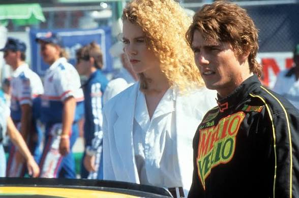

🏁 DAYS OF THUNDER (1990) — CERTIFIED MGC MS-60

🏛️ MGC SUPREME COURT OF CONSENSUS
- ASSET TITLE: Days of Thunder (1990)
- OFFICIAL REGISTRY GRADE: Certified MGC AU-58 / MS-60 Borderline Crossover (Final Heavy Bashing Sealed)
- HIGH BENCH JURISDICTION: Supreme Court Vault / Action Blockbuster Docket
- CASE FILE: #053
- PRESIDING PANEL: Judge Sally, Judge Dan (Chief of Forensics), Chief Grader MGC, and Chief Justice MGC
📜 THE MASTER NUMISMATIC AUDIT (6-FLAW TRACK DAMAGE LOG)
- Baseline Bench Assessment: Room Allocation ➔ AU-58 / MS-60 Split-Grade While Tony Scott’s blisteringly fast, asphalt-shredding visual eye and Hans Zimmer’s roaring synthesizer engine score give this asset immense raw commercial eye appeal, a close forensic inspection under the lens reveals heavy track wear, deep logic dents, and massive narrative scuffs that keep it pinned tightly to the uncirculated border line.
🚨 Key Planchet Flaws:
1. The “Top Gun on Wheels” Die Over-Strike (Pedigree Defect)
- The Damage: The entire narrative suffers from a heavy design over-strike, utilizing a recycled 1986 blueprint. Under the lens, it stamps an identical beat-for-beat dynamic of a hotshot protagonist, a tragic mentor, a bitter rival, and a career-threatening crash onto the planchet, keeping the asset from achieving a truly unique strike depth.
2. The High-Speed Drafting Scuff (Character Logic Friction)
- The Damage: A massive logic scuff marks the second act where a veteran crew chief has to explain basic aerodynamic drafting to a seasoned, top-tier professional racing driver using sugar packets in a diner. This artificial script shortcut leaves a visible handling mark on the character’s core intelligence field.
3. Paddock Lawlessness & Friction Dents (Technical Realism Wear)
- The Damage: The characters cause severe structural deformation to the realism of the coin by engaging in unhinged, reckless behavior—deliberately T-boning rental cars and trading paint at 200 mph. These actions would trigger immediate criminal charges and permanent NASCAR bans, leaving a heavy circulation dent on the narrative surface.
4. The Ghost Car Paradox (Catastrophic Timeline Leak)
- The Damage: A severe timeline planchet leak occurs during the movie’s very first race. A clear, high-luster shot of the #46 City Chevrolet is completely visible racing on the track—weeks before Cole Trickle is even hired or the car is explicitly built in the script storyline.
5. The Magic Chameleon Wheels (Visual Planchet Slip)
- The Damage: A glaring visual editing slip mars the final high-stakes Daytona 500 sequence. Cole’s wheels instantly transform from solid black to bright, flashing silver on pit road, only to instantly click back to a dull black when returning to the track—a major lack of visual alignment under the lens.
6. The Earbud-Less Telepathy (Audio/Visual Splice Defect)
- The Damage: A deep audio splice blemish appears in the final act. Driver Bobby Hamilton is shown with his helmet completely removed inside a roaring 200 mph stock car, magically hearing crystal-clear radio frequencies directly inside his bare ears without a headset or communication wire attached.
⚖️ 🏆 THE CHIEF JUSTICE’S FINAL CONSENSUS DECREE
- Let the ledger show the unvarnished hard truth: as a high-testosterone, popcorn-fueled entertainment delivery vehicle, this piece has incredible mechanical energy. But under strict judicial review, the sheer volume of technical scratches, timeline leaks, and heavy pace marks makes it completely impossible to assign a premium Gem Mint sticker.
- By order of the Chief Justice, the asset is permanently slabbed, sealed, and locked on the ultimate dividing line as a Certified MGC MS-60 Borderline Crossover “HEAD FOR THE SMOKE!”
Case #053 is officially closed and hammered down! ⚖️🏁🏎️🛠️💥🔨

• © 2026 MOVIE GRADING CONSENSUS. All Sovereign Rights Reserved.